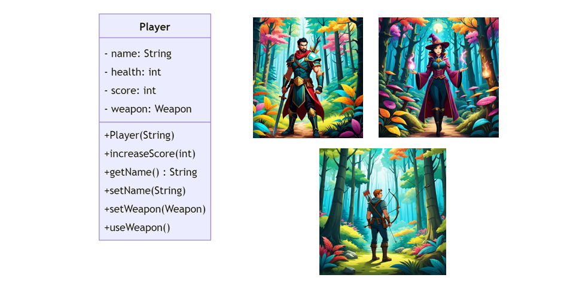
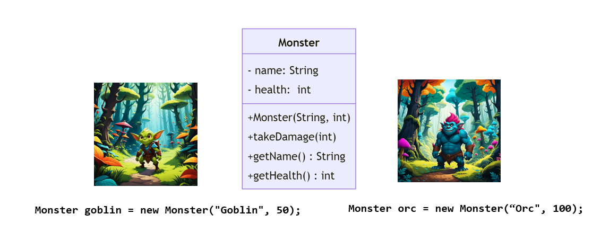
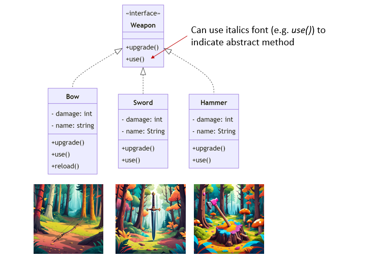
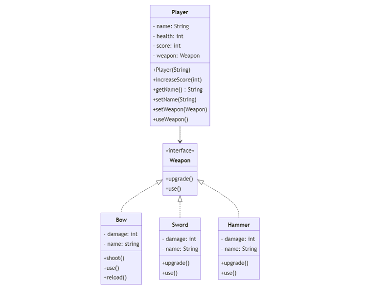
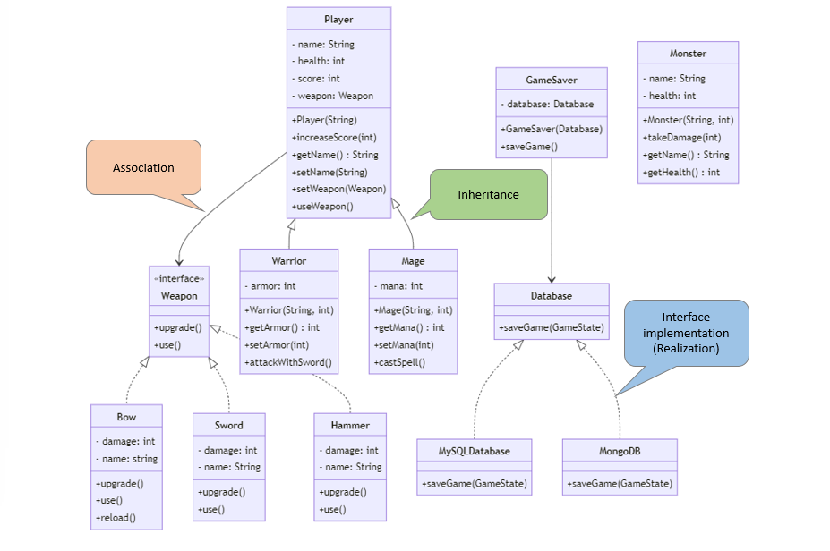
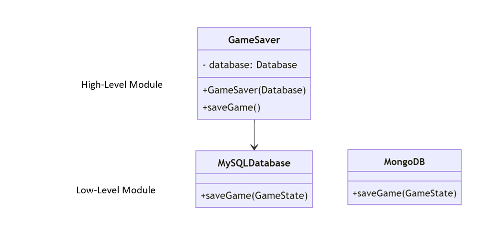

Object-Oriented Design (OOD) is a programming paradigm that uses "objects" to design applications and computer programs. This results in more flexible and maintainable software.
In this lecture, we will learn about different Object-Oriented (OO) concepts using an RPG game as an example.
Classs and Objects are fundamental concepts in OO design.
Let's consider the Player class in the RPG game. The Player class in the RPG game serves as a blueprint for creating player objects in the game. It encapsulates the properties and behaviors that are common to all players.
Attributes represent the properties/state of an object. In the case of the Player class, there are several attributes such as name, health, and score that define the properties or the state of a Player object.
name: A String representing the player's name.health: An integer value representing the player's health.score: An integer value representing the player's score.public class Player {
private String name;
private int health;
private int score;
}
Methods: Methods define the behavior of an object, detailing what the object can do.
Player class, methods like increaseScore alter the object's state or interact with other objects.setName(String name) method in the Player class is a setter method that allows you to change the player's name.getName() is a getter method that returns the value of the name field.useWeapon method is an example of a behavior that a Player object can perform (e.g. allow the Player object to use a weapon)public class Player {
private String name;
private int health;
private int score;
// Constructor
public Player(String name) {
this.name = name;
this.health = 100; // Default health for a new player
this.score = 0; // Default score for a new player
}
public void increaseScore(int points) {
score += points;
}
// Getter methods
public String getName() {
return name;
}
// Setter methods
public void setName(String name) {
this.name = name;
}
//other methods ...
}
A constructor is a special method that is invoked when an object of a class is instantiated. It is used to initialize the attributes of the class. The Player constructor, for example, initializes the player's name, health, and score.
An object is an instance of a class, containing the attributes and methods defined in the class. To create a Player object, we simply instantiate the class with the new keyword:
Player player1 = new Player("Alice");
Player player2 = new Player("Bob");
Methods allow for the manipulation and interaction with an object's data. In Java, object methods are invoked using the "dot" notation. Example
String name = player1.getName() //get the player's name
player1.increaseScore(10); //increases player1's score by 10

The UML diagram visually represents the structure of the Player class, including its attributes, constructor, methods, and their signatures. The class is represented as a rectangle divided into three sections.
Player in this case).name, health, and score) with their corresponding types.
- symbol before the attribute names (name, health, and score) indicates that they are private, meaning they can only be accessed within the class itself.+ symbol before the method names (Player(String), increaseScore(int), getName(), etc) indicates that they are public, meaning they can be accessed from other classes.() after the method names indicates that they are methods (functions) of the class.String, int, and other data types represent the types of attributes and return types of methods.: String after getName() indicates that the return type of the method is String.String name in Player(String), int points in increaseScore(int), etc) indicate the input values that can be passed to the methods when they are called.Encapsulation is a fundamental principle of object-oriented programming that restricts direct access to an object's attributes. It avoids the data and code being tied together within an object from being randomly accessed by other code defined outside the object or class.

The Monster class represents a monster in the game. It includes attributes like name and health, and methods to manage these attributes.
public class Monster {
private String name;
private int health;
// Constructor
public Monster(String name, int health) {
this.name = name;
this.health = health;
}
public void takeDamage(int amount) {
health -= amount;
if (health < 0) {
health = 0;
}
}
// Getters
public String getName() {
return name;
}
public int getHealth() {
return health;
}
}
Let's instantiate three monsters from the Monster class.
Monster goblin1 = new Monster("Goblin", 50);
Monster goblin2 = new Monster("Goblin", 50);
Monster orc1 = new Monster("Orc", 100);
Here are the three types of visibility modifiers in Java:
In the Monster class, the name and health variables are declared as private, which means they cannot be accessed directly from outside the class.
For instance, the following statement will generate compilation errors.
class Main {
public static void main(String[] args) {
Monster goblin = new Monster("Goblin", 50);
goblin.health = -30; // Error: name has private access in Monster
}
}
By making the visibility of the variable health private, it cannot be directly accessed or modified from outside the class. This prevents the health from being set to an invalid value (e.g. negative number) accidentally.
Public methods are provided to allow controlled access to the private attributes.
getName() and getHealth() methods allow external code to access the name and health attributes of a Monster object.takeDamage(int amount) method is a public method that allows external code to interact with the health attribute in a controlled way. It reduces the health by the amount specified, but also ensures that health cannot go below 0.Inheritance is a mechanism in Java that allows one class to acquire the properties (fields) and behaviors (methods) of another class.
Let's Create a new class named Warrior that extends Player.
Warrior class inherits all the public and protected members (fields and methods) of the Player class.public class Warrior extends Player {
private int armor;
public Warrior(String name, int armor) {
super(name);
this.armor = armor;
}
}
We may add new methods that are specific to a Warrior. For example, a Warrior might have a method to attack with a sword.
public class Warrior extends Player {
private int armor;
public Warrior(String name, int armor) {
super(name);
this.armor = armor;
}
//getter and setter methods ...
public void attackWithSword() {
// Implementation of attackWithSword
}
}
Inheritance promotes reusability by allowing you to reuse code that's already been tested and debugged.
For instance, let's consider the Warrior class that extends the Player class in our game.
Player class might have attributes like name, health, and weapon, and methods to manage these attributes and perform actions like attack().Warrior class, we don't have to write all this code again. Instead, we can simply extend the Player class, and the Warrior class will automatically have all the attributes and methods of the Player class. This promotes reusability.Exercise:
Define the Mage Class:
Mage class should extend the Player class.mana (int) to represent the mage's magic energy.name and mana as parameters and initializes these attributes along with the attributes from the Player class.mana.castSpell() that represents the mage casting a spell. The implementation can be simple, such as printing a message.An interface in OO defines a contract that a class agrees to follow. The purpose of an interface is to specify a contract or behavior that classes can implement.

Let's begin by defining a Weapon interface with use and upgrade() methods.
public interface Weapon {
void use();
void upgrade();
}
We will implement the Weapon interface in two distinct classes: Bow and Sword.
The Bow class includes methods upgrade(), use(), and reload().
upgrade(): Increases the bow's damage and provides feedback.use(): Simulates the action of shooting an arrow.reload(): Restocks the bow with arrows.public class Bow implements Weapon {
private int damage;
private int arrows;
private String name;
// Constructor and other methods ...
public void upgrade() {
damage += 10;
System.out.println(name + " has been upgraded");
}
public void use() {
System.out.println("Shooting an arrow");
}
public void reload() {
arrows = 10; // Reloads the bow with 10 arrows
}
}
The Sword class includes methods upgrade() and use().
upgrade(): Increases the sword's damage and provides feedback.use(): Simulates the action of swinging the sword.public class Sword implements Weapon {
private int damage;
private String name;
// Constructor and other methods ...
public void upgrade() {
damage += 15;
System.out.println(name + " has been upgraded.");
}
public void use() {
System.out.println("Swinging the sword");
}
}
In both classes, the use() method is an essential part of the Weapon interface's contract. This method provides a way to use the weapon, and its implementation varies between the Bow and Sword.
Here's how we can instantiate the Sword and Bow objects:
// Creating and using a Sword object
Sword sword = new Sword();
sword.setName("Sword of Power");
sword.setDamage(50);
sword.use();
// Creating and using a Bow object
Bow bow = new Bow();
bow.use();
bow.reload(); // Reload the bow after use
bow.upgrade();
Suppose that players can use their weapon during gameplay.
use method in the Weapon class represents the action of using the weapon, such as swinging a sword or shooting an arrow with a bow.Player class, we can add a method that allows the player to use their weapon.Here is how the code might look:
public class Player {
private Weapon weapon;
private String name;
private int health;
private int score;
public Player(Weapon weapon) {
this.weapon = weapon;
this.score = 0;
}
public void useWeapon() {
weapon.use();
}
public void setWeapon(Weapon weapon) {
this.weapon = weapon;
}
// other parts of the code
}
In this updated code:
Player class now has a method useWeapon(). This method calls the use() method on the weapon object, which is an instance of a class that implements the Weapon interface.useWeapon() method will invoke the specific use() method of the weapon they are holding, whether it's a sword, bow, or any other weapon type.Abstraction in object-oriented design is a process of hiding the implementation details and showing only the essential functionality to the user. It lets you focus on what the object does instead of how it does it.

public class Player {
private Weapon weapon;
public void useWeapon() {
weapon.use();
}
// other parts of the code ...
}
In our game,
Player class interacts with the Weapon interface, not the specific classes that implement this interface.Weapon interface provides a high-level understanding of what a weapon should be able to do (i.e., it should be usable), without getting into the specifics of how this is done.use method is called. The Player class doesn't need to know how the use method works for each specific type of weapon. It only needs to know that the use method exists and can be called on the weapon. The specific implementation details of how each type of weapon is used are hidden from the Player class.Composition involves composing a class using instances of other classes or interfaces to achieve the desired functionality.
Delegation is a core concept in composition, where an object handles a request by delegating it to a second helper object (the delegate). This allows distributing responsibilities among different classes and promotes code reuse and flexibility.
For instanace, for the Player class,
Weapon object and has a method useWeapon() that calls the use() method on the Weapon object.Player class implementing the use() method itself, it delegates this responsibility to the weapon object.Player class to use the behavior defined in the Weapon class without needing to know the details of how this behavior is implemented."Program to an interface" is an OO Design principle which suggests that software components should depend on abstraction rather than concrete implementations. This principle promotes decoupling and enhances the flexibility and maintainability of the code.
In the context of the Player and Weapon classes, if Weapon is an interface (or an abstract class), and the Player class uses the Weapon interface rather than a specific weapon implementation. This means you can pass any object that implements Weapon to Player, making the code more flexible. If you want to introduce a new weapon, you just need to create a new class that implements Weapon, and Player can use it without any changes.
Polymorphism, a core principle in object-oriented programming (OOP), is derived from the Greek words meaning "many shapes."
In our case, with both Bow and Sword classes implementing the Weapon interface, they demonstrate polymorphism by being used interchangeably wherever a Weapon type is expected. Both classes possess a use() method, albeit with differing implementations:
Weapon bow = new Bow();
Weapon sword = new Sword();
// Using the weapons
bow.use();
sword.use();
The benefit of this approach is the creation of flexible and extendable code. It allows for the introduction of varied behaviors (like different ways of using weapons) depending on the type of object at runtime, without the need for changing existing code.
For example, introducing a new weapon type like a Hammer is straightforward. The Hammer class, implementing the Weapon interface, can define its unique version of the use() method:
public class Hammer implements Weapon {
private int damage;
private String name;
// Constructor and other methods ...
public void use() {
System.out.println(name + " smashes causing " + damage + " damage.");
}
}
Now, the Hammer can be seamlessly integrated into the game and used by the Player class. A Hammer object can be created and set as the player's weapon. There is no need to modify the Player class or any other existing code.
// Create a new Hammer object
Hammer hammer = new Hammer();
...
player.setWeapon(hammer);
Polymorphism enables the Player class to interact with any object that implements the Weapon interface, regardless of the weapon's specific type or the details of its use() method. This leads to a more maintainable, scalable, and flexible codebase, where new functionalities can be added with minimal changes.
In UML (Unified Modeling Language) class diagrams, the relationships and structures of classes in an object-oriented system can be graphically represented.

Types of relationship in OO:
Warrior and Mage are subclasses of Player. This is an is-a relationship because a Warrior is-a Player, and a Mage is-a Player.Player class has a Weapon. This is a has-a relationship because a Player has-a Weapon.Bow and Sword implement the Weapon interface.Abstract class vs. Interface
For instance, we can instead define the abstract class Weapon to define a concrete method getDamage(), while still requiring subclasses to implement the abstract use() method.
public abstract class Weapon {
int damage;
abstract void use();
public int getDamage() {
return this.damage;
}
}
Any subclass of Weapon needs to extend the abstract class rather than implementing it like an interface. For instance, a Bow class extending the Weapon abstract class would inherit the getDamage() method and must provide its own implementation of the use() method:
public class Bow extends Weapon {
public Bow(int damage) {
super(damage);
}
public void use() {
// Shooting arrows
}
}
Here is the UML diagram.

SOLID is an acronym representing five key design principles intended to make software designs more understandable, flexible, and maintainable.
These principles serve as guidelines for designing software systems that are modular, maintainable, and easily extensible.
The Single Responsibility Principle requires that a class should have only one reason to change, meaning it should have only one job or responsibility.
In our RPG game, we ensure each class has a single responsibility.
Weapon class is only responsible for weapon-related attributes and behaviors. It should not include logic for saving game state or managing player health.Player class is responsible for player-related behaviors. It's not concerned with how a weapon is used; it only knows that it can use a weapon.By delegating the responsibility of using a weapon to the Weapon class, the Player class adheres to the SRP. If the way a weapon is used needs to change, you would modify the Weapon class, not the Player class. This separation of concerns leads to more maintainable and flexible code.
The Open/Closed Principle states that software entities should be open for extension, but closed for modification. This means creating modules that can be extended without altering their existing code.
In our game,when introducing new weapon types like MagicWand, instead of modifying the existing Weapon class, we may extend it to support new types of weapons. This approach allows for adding new functionalities without changing the existing code.
public class Player {
Weapon weapon;
// Rest of the code...
public void setWeapon(Weapon weapon) {
this.weapon = weapon;
}
public void useWeapon() {
weapon.use();
}
}
public interface Weapon {
void use();
void upgrade();
}
public class MagicWand implement Weapon {
private int magicPower;
// Magic wand specific methods...
void use (){
System.out.println("Casting a spell");
}
void upgrade() {
magicPower += 10;
}
}
Weapon my_weapon = new MagicWand();
player.setWeapon(my_weapon);
player.useWeapon();
According to LSP, objects of a superclass should be replaceable with objects of its subclasses without affecting the application. In the context of the Weapon class and its potential subclasses, to adhere to LSP, any subclass of Weapon should be able to be used wherever a Weapon object is expected, without causing any issues or changes in behavior.
For instance, suppose we add an method to attack a monster. We should be able to use any subclass of the Weapon interface to attack the Monster.
public class Monster {
private String name;
private int health;
public void attack(Weapon weapon) {
int damage = weapon.getDamage();
takeDamage(damage);
}
//other codes ...
}
The Interface Segregation Principle states that no client should be forced to depend on methods it does not use.
Attackable for attack actions, Talkable for talking actions, etc.Attackable and not Talkable.This approach makes your code more flexible and maintainable. If you need to add a new type of action, you can create a new interface without modifying existing interfaces or classes that don’t need that action.
We will start with a GameSaver class for saving the state of a game. Consider the following implementation of the class.
public class GameSaver {
private MySQLDatabase database;
public GameSaver() {
this.database = new MySQLDatabase();
}
public void saveGame(GameState gameState) {
database.saveGame(gameState);
}
}
To save the game, we may execute:
GameSaver gameSaver = new GameSaver();
gameSaver.saveGame(gameState);
Cohesion is used to indicate the degree to which a class has a single, well-focused purpose.
Coupling is the degree to which one class knows about another class.
Good OO design should be loosely coupled and highly cohesive.
In the previous GameSaver example, the MySQLDatabase instance represents a dependency of the GameSaver class.
GameSaver class directly instantiates a `MySQLDatabase`` object in its constructor and uses this object to save the game state.GameSaver class is tightly coupled with the MySQLDatabase class.The problem with this design is that if you want to change the type of database (for example, from MySQL to MongoDB), you would need to modify the GameSaver class. For instance,
public class GameSaver {
private MongoDB database;
public GameSaver() {
this.database = new MongoDB();
}
public void saveGame() {
database.saveGame(GameState gameState);
}
}
You have to modify the GameSaver class every time you want to change the type of database used by the class. A better approach would be to decouple GameSaver from the specific database classes using the "Dependency Inversion Principle".
A "dependency" here here refers to an object that can be used as a service. In this example, the GameServer depends on the concrete implementation of the databases (e.g. MySQLDatabase or MongoDB).

The DIP states that high-level modules should not depend on low-level modules. Both should depend on abstractions.

In the context of the GameSaver example, GameSaver is a high-level module and Database (MySQLDatabase and MongoDB classes) are a low-level module.
GameSaver depend on the Database interface (an abstraction), rather than on concrete Database implementations (MySQLDatabase or MongoDB), we are adhering to the Dependency Inversion Principle.GameSaver more flexible and easier to maintain, as it can work with any type of database that implements the Database interface.Dependency Injection is a technique that implements the Dependency Inversion Principle, where an object receives other objects it depends on, rather than creating them itself. These dependencies are usually provided through a constructor, a setter, or some kind of factory method.
First, we define a Database interface, which declares a method saveGame(GameState gameState), which is expected to be implemented by any class that implements this interface. The `saveGame`` method is intended to save a game state to a database.
public interface Database {
void saveGame(GameState gameState);
}
Next, two classes MySQLDatabase and MongoDB are defined, both of which implement the Database interface. This means they provide their own implementations of the saveGame method.
public class MySQLDatabase implements Database {
public void saveGame(GameState gameState) {
// Implementation for saving game to a MySQL database
}
}
public class MongoDB implements Database {
public void saveGame(GameState gameState) {
// Implementation for saving game to a MnogoDB database
}
}
Let's improve the design of the GameSever class.
Database (e.g., MySQLDatabase or MongoDB) is provided to the GameSaver class through its constructor.GameSaver class doesn't need to know the specific type of Database it's working with. Instead, it works with any object that implements the Database interface.public class GameSaver {
private Database database;
public GameSaver(Database database) {
this.database = database;
}
public void saveGame() {
database.saveGame();
}
}
By passing different implementation of Database interface to the GameSaver constructor, you can save the game using different types of databases without modifying the GameSaver class.
For instance, for using the MySQL database,
Database mySqlDatabase = new MySQLDatabase();
GameSaver gameSaver = new GameSaver(mySqlDatabase);
gameSaver.saveGame(); // Save the game state using MySQLDatabase
If we want to change to MongoDB, there is no need modify existing classes (e.g. GameSaver)
Database mongoDB = new MongoDB();
GameSaver gameSaver = new GameSaver(mongoDB);
gameSaver.saveGame(); // Save the game state using MongoDB
The improved design allows for flexibility in choosing the type of database to use for saving the game. Any class that implements the Database interface can be used, making it easy to switch between different types of databases.
Types of Dependency Injection:
Constructor Injection: In this type, the dependencies are provided through a class constructor. This is the most common type of DI and is typically used when the dependency is required for the class to function.
public class GameSaver {
private Database database;
//The databse object is injected through this constructor
public GameSaver(Database database) {
this.database = database;
}
public void saveGame(GameState gameState) {
database.saveGame(gameState);
}
}
A concrete Database object is injected from outside when the GameSaver object is instantiated.
Database mySqlDatabase = new MySQLDatabase();
GameSaver gameSaver = new GameSaver(mySqlDatabase);
Setter Injection
In this type of dependency injection, the client exposes a setter method that the injector uses to inject the dependency. This is typically used when the dependency is optional.
public class GameSaver {
private Database database;
public void setDatabase(Database database) {
this.database = database;
}
public void saveGame(GameState gameState) {
if(database != null) {
database.saveGame(gameState);
}
}
}
The GameServer class first created. The setter method is then called to inject the concrete Database object.
Database mySqlDatabase = new MySQLDatabase();
GameSaver gameSaver = new GameSaver();
gameSaver.setDatabase(mySqlDatabase);
Java does not support multiple inheritance. Multiple inheritance is a language feature that allows a class to inherit from multiple parent classes. While it can provide flexibility and code reuse, it also introduces challenges, one of which is the "Diamond Problem" or "Diamond Inheritance Problem."

The Diamond Problem occurs when a class inherits from two or more classes that have a common base class
MagicKnight class inherits from both the Warrior and Mage classes, which themselves inherit from the Character class. This creates a diamond-shaped inheritance hierarchy.Warrior and Mage classes define their own implementation of the attack method, which overrides the default implementation in the Character class. In the MagicKnight class, there is ambiguity about which attack method should be used. Should it use the attack implementation from Warrior or Mage?The Diamond Problem leads to code ambiguity and potential conflicts. To avoid such issues, languages such as Java often promote alternative approaches like interfaces or composition, which provide a more flexible and manageable way to achieve code reuse and extensibility without the problems associated with multiple inheritance.
Inheritance is a mechanism where a new class (derived or child class) extends an existing class (base or parent class). It’s often used to express an "is-a" relationship between the base and derived class. For instance, in a RPG game, you might have a base class Character and derived classes like Player, Monster, and NPC.
Base Class: Character
This is the base class representing a general character in the RPG game.
public class Character {
private String name;
//other attributes
public void attack(Character target) {
System.out.println(name + " attacks.");
}
public void talk() {
System.out.println(name + " talks.");
}
}
Player is a subclass of Character that inherits and utilizes the attack and talk methods without modification. This class signifies that players in the game can both attack and talk.
public class Player extends Character {
@Override
public void attack(Character target) {
super.attack(target);
}
@Override
public void talk() {
System.out.println("The player is talking")
}
}
Monster is another subclass of Character. While it retains the attacking capability (inherited from Character), it overrides the talk method to throw an exception, indicating that monsters in the game are not capable of talking.
public class Monster extends Character {
@Override
public void attack(Character target) {
super.attack(target);
}
@Override
public void talk() {
throw new UnsupportedOperationException("Monsters cannot talk.");
}
}
NPC (Non-Player Character) extends Character and is designed to talk but not to attack. The talk method is used as inherited, but the attack method is overridden to throw an exception, reflecting that NPCs are not designed for combat in the game.
public class NPC extends Character {
@Override
public void talk() {
System.out.println("NPC is talking")
}
@Override
public void attack(Character target) {
throw new UnsupportedOperationException("NPCs cannot attack.");
}
}
While inheritance is a commonly used mechanism in object-oriented programming for sharing behavior among classes, it can lead to several issues, including the violation of the Liskov Substitution Principle (LSP):
Rigidity: Inheritance creates a tight coupling between the base class and its subclasses. Any changes made to the base class can have unintended ripple effects on all of its derived classes. This rigidity can make maintenance and future updates more challenging.
Lack of Flexibility: Subclasses inherit all properties and methods of the base class, including potentially irrelevant or unnecessary ones. This can lead to a bloated and less optimal design, reducing the flexibility of the subclass to operate independently of its parent.
Violation of the Liskov Substitution Principle (LSP):
Monster and NPC classes in the RPG example), it violates LSP.Character object with a Monster or NPC object could lead to runtime errors, as these subclasses do not fully support all behaviors of the base class.We can define interface classes o address the limitations of inheritance
Attackable and Talkable instead of using a base Character class.
We first define the interface to model the behavior of different types of characters.
Attackable is an interface with the method attack(Character target), which define the behavior to attack other characters.Talkable is another interface with the method talk() that represents the ability to talk.public interface Attackable {
void attack(Character target);
}
public interface Talkable {
void talk();
}
The Player class implements both Attackable and Talkable interfaces.
Attackable, the Player class provides concrete implementations of the attack methodsTalkable, the Player class also provides a concrete implementation of the talk method, giving it the ability to speak.public class Player implements Attackable, Talkable {
@Override
public void attack(Character target) {
System.out.println("Player attacks.");
}
@Override
public void talk() {
System.out.println("Player is talking.");
}
}
The Monster class implements the Attackable interface.
attack , meaning it can attack other entities and take damage.public class Monster implements Attackable {
@Override
public void attack(Character target) {
System.out.println("Monster attacks.");
}
}
The NPC class implements the Talkable interface. It provides an implementation of the talk method, which means an NPC can engage in conversation.
public class NPC implements Talkable {
@Override
public void talk() {
System.out.println("NPC is talking.");
}
}
Here is an example of using the interface.
public class Game {
public static void main(String[] args) {
Talkable player = new Player();
Talkble npc = new NPC();
npc.talk();
player.talk();
}
}
By using interfaces instead of inheritance provides enhanced flexibility, modularity, and maintainability.
Player, Monster, and NPC can implement multiple interfaces, allowing for a mix-and-match approach to functionality.In unit testing , mock objects can be used to imitate the behavior of external dependency in a controlled manner. This is useful when testing functions that interact with files, databases, or external systems. Direct testing of functions that integrate with databases can be slow and unreliable.
The Dependency Inversion Principle (DIP) enhances the testability of the GameSaver class by facilitating the injection of mock database objects during tests. This mock object replicates the functionality of a genuine Database, minus the side effects like real data storage. As a result, the GameSaver class can be tested in isolation, removing the need to set up and dismantle a real database for each test.
Let's consider the following MockDatabase class which simulates the error condition of failing to connect to the database.
MockDatabase serves as a simulated Database object for testing.DatabaseConnectionException when simulateFailure is true, emulating a failed database connection.public class MockDatabase implements Database {
@Override
public void saveGame(GameState gameState) {
throw new DatabaseConnectionException("Failed to connect to database.");
}
}
Here is a sample test case when there is database connection failure to test the error-handling abilities of the GameSaver class in JUnit.
@Test
public void testSaveGameFailure() {
MockDatabase mockDatabase = new MockDatabase();
GameSaver gameSaver = new GameSaver(mockDatabase);
GameState mockGameState = new MockGameState();
gameSaver.saveGame(mockGameState);
// check if the gameSaver handles the error gracefully ...
}
By using mock databases, we can isolate and assess our application logic without involving real database operations. The advantages include:
In frameworks like Java Spring, the creation and management of dependencies are delegated to an Inversion of Control (IoC) container.
In Spring boot, you can define your configuration in application.yaml (or application.yml) files. For example, if you have different configurations for MySQL and MongoDB, you might define two files: application-mysql.yml and application-mongodb.yml.
Here's an example of what applcation-mysql.yml might look like:
spring:
datasource:
url: jdbc:mysql://localhost:3306/mydatabase
username: myusername
password: mypassword
Here is an example of application-mongodb.yml:
spring:
data:
mongodb:
uri: mongodb://localhost:27017/mydatabase
You can choose which profile (and thus which configuration file) to use when launching the application by setting the spring.profiles.active property. For intsance,
./mvnw spring-boot:run -Dspring-boot.run.profiles=mysql
./mvnw spring-boot:run -Dspring-boot.run.profiles=mongodb
The Inversion of Control (IoC) container in Spring Boot will instantiate the corresponding object and inject it into the application. This automatic creation, configuration, and injection of dependencies is handled by the Spring Framework's IoC container. By outsourcing the creation and management of dependencies to the IoC container,it allows developers to focus on the core functionality of their application rather than the details of object creation and management.Your application components can remain focused on their core responsibilities, leading to cleaner and more maintainable code.